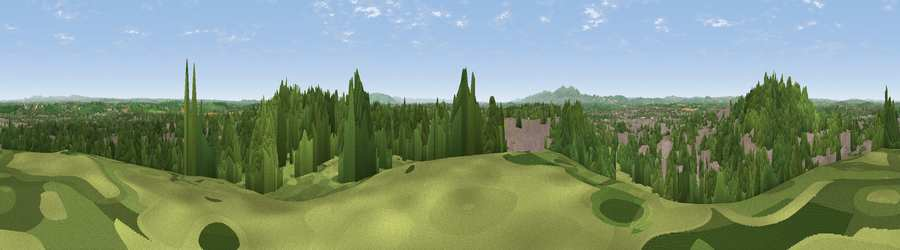

Viewpoint near Worcester
#18902 in England · top 41% of its area beats it · near WorcesterWhere it is
The exact computed spot (SO 87275 55525). Click the marker for map links.
The view, rendered

A 360° render of this exact spot computed from the terrain model, tree cover and land cover — summer colours, afternoon light, calibrated against photographs of famous viewpoints. Real trees, hedges and buildings will differ in detail.
The panorama
Grey silhouette: terrain skyline in each direction (720 bearings, Earth curvature and refraction included). Dashed green: skyline with trees (+15 m) and buildings (+8 m) as obstacles. Blue strip: how far the ground is visible on each bearing.
Where the view opens
Wedge length = distance to the farthest visible ground on that bearing (vegetation-aware). Rings at 10, 25 and 50 km.
What fills the view
42% woodland · 28% built-up · 23% grassland · 6% cropland · 1% bare ground
Angular shares of the visible panorama (visual magnitude), not map area. Landscape diversity 0.55 (0–1 Shannon).
Key numbers
More beautiful places nearby
The staircase of upgrades: each row has a higher view potential than everything closer. Driving times are estimates from straight-line distance, calibrated against real road routing — check an actual route before setting out.
| Place | Direction | Drive | Score |
|---|---|---|---|
| Viewpoint near Worcester | WNW · 1 km | ~2 min | 54.7 |
| Viewpoint near Tibberton | ESE · 2 km | ~6 min | 58.4 |
| Viewpoint near Littleworth | S · 3 km | ~8 min | 65.8 |
| Viewpoint near Storridge | WSW · 13 km | ~24 min | 70.5 |
| Viewpoint near Martley | WNW · 13 km | ~24 min | 78.1 |
| Viewpoint near West Malvern | SW · 14 km | ~25 min | 81.4 |
| North Hill | SW · 14 km | ~25 min | 86.8 |
| Worcestershire Beacon | SW · 15 km | ~26 min | 87.1 |
52.19781, -2.18759 · source: screening · position refined by local search. Computed location — check access rights before visiting.